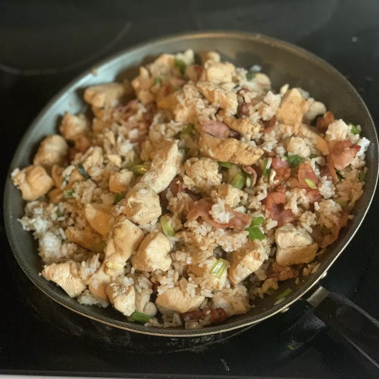

Bacon and Chicken Fried Rice

Description
Great side dish that doesn't take long to prepare and has lots of flavor. Don't cook the bacon too much; you don't want it to have a crunchy texture. This makes excellent leftovers!
Ingredients
3 cups water
3 cups instant white rice
2 teaspoons vegetable oil
3 skinless, boneless chicken breasts, cut into chunks
12 slices bacon
1 cup chopped green onion
1/2 cup soy sauce, or to taste
Steps
- Bring water to a boil in a saucepan. Stir instant white rice into boiling water.Cook rice until softened, about 5 minutes.
- Heat oil in a separate skillet over medium heat. Cook chicken in hot oil until cooked through and no longer pink in the middle, 5 to 7 minutes.
- Fry bacon in a large wok or skillet over medium-high until hot and cooked through but not yet crunchy, 2 to 3 minutes per side. Remove bacon to a plate lined with paper towels. Drain fat from wok, reserving 1 to 2 tablespoons of drippings in the bottom of the wok. Cut bacon into small pieces.
- Return wok to medium-high heat and heat reserved bacon drippings. Combine rice, chicken, bacon, green onions, and soy sauce in the wok; cook and stir until evenly mixed and hot, 2 to 3 minutes.